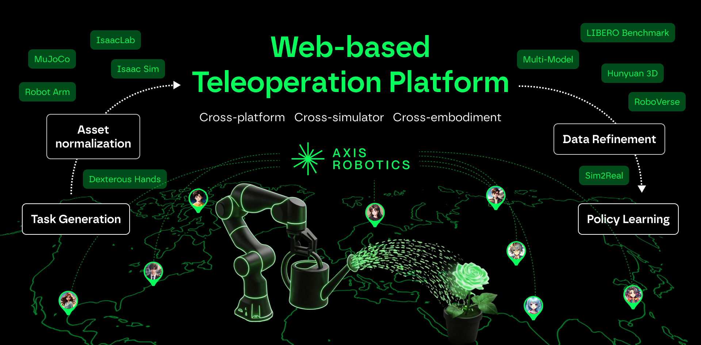

Platform Architecture
Explore the five interconnected modules that make up the Axis AI Platform infrastructure, bridging lightweight data collection with heavy-duty simulation.


Axis AI Platform: A unified infrastructure bridging web-based teleoperation, GPU-accelerated realistic augmentation, and sim-to-real deployment.
Robotic learning systems increasingly rely on large-scale demonstration data and realistic simulation for training and evaluation. However, existing workflows are often fragmented across simulators, operating systems, and compute environments: lightweight simulators enable broad access for teleoperation but lack high-fidelity rendering and physics, while GPU-based simulation stacks enable realism but are expensive and restrictive to access.
We present Axis AI Platform, a unified infrastructure that supports (i) multi-simulator development and execution, (ii) cross-machine orchestration spanning heterogeneous compute (web, Mac/Windows, and Linux GPU servers), and (iii) an end-to-end data pipeline from web-based teleoperation to photorealistic augmentation and downstream model training with sim-to-real deployment.
In Axis AI Platform, users teleoperate robots directly in a browser via a MuJoCo WebAssembly frontend, producing demonstrations without specialized hardware or compute. Demonstrations are then uploaded in a unified trajectory format and replayed on GPU-based Linux servers to generate realistic, domain-randomized rollouts using an IsaacSim-based augmentation backend. We further provide two production pipelines: (1) data cleaning and trajectory refinement, and (2) model training and sim-to-real evaluation, enabling rapid iteration from data to real-world deployment.
Explore the five interconnected modules that make up the Axis AI Platform infrastructure, bridging lightweight data collection with heavy-duty simulation.
Quantitative evaluation of trajectory optimization across LIBERO tasks. Our offline cleaning pipeline significantly reduces high-frequency artifacts (acceleration and jerk) from raw web-teleoperated data.
| LIBERO Task | Mean Acc. ↓ | Mean Jerk ↓ | Pos. Dev. (m) | Removed Ratio | ||
|---|---|---|---|---|---|---|
| Before | After (Ours) | Before | After (Ours) | |||
| Task 1: Place Black Bowl on Top of cabinet | 0.2458 | 0.0738 | 2.6425 | 1.3363 | 0.0235 | 6.46% |
| Task 2: Place Rear Butter in Cabinet Top Drawer and Close It | 0.3067 | 0.0943 | 3.7395 | 1.6208 | 0.0654 | 5.73% |
| Task 3: Place the black bowl on the plate | 0.3559 | 0.1011 | 5.1358 | 2.3634 | 0.0201 | 7.17% |
| Task 4: Place the black bowl on top of the cabinet | 0.3225 | 0.0859 | 4.6724 | 2.0785 | 0.0142 | 3.77% |
| Task 5: Place the frying pan on the stove | 0.1832 | 0.1055 | 2.4771 | 1.1374 | 0.0106 | 1.24% |
| Task 6: Place the moka pot on the stove | 0.1819 | 0.1090 | 2.5239 | 1.6784 | 0.0064 | 1.94% |
| Task 7: Turn on the stove | 0.2689 | 0.1295 | 3.8291 | 2.3017 | 0.0142 | 3.81% |
| Task 8: Close Cabinet Bottom Drawer | 0.1574 | 0.0741 | 1.9118 | 0.6659 | 0.0057 | 4.59% |
| Task 9: Place the black bowl into the cabinet’s bottom drawer | 0.1551 | 0.0913 | 1.8665 | 1.3193 | 0.0161 | 2.03% |
| Task 10: Place Wine Bottle on Wine Rack | 0.1841 | 0.1114 | 2.0298 | 1.0022 | 0.0625 | 4.86% |
| Task 11: Close Cabinet Top Drawer | 0.1224 | 0.0683 | 1.5424 | 0.5822 | 0.0053 | 2.62% |
| Task 12: Place the black bowl into the cabinet’s top drawer | 0.2109 | 0.1418 | 2.6997 | 2.1633 | 0.0961 | 11.4% |
| Task 13: Place Black Bowl on Plate | 0.1682 | 0.0816 | 2.2262 | 1.1552 | 0.2511 | 2.14% |
| Task 14: Place the black bowl on top of the cabinet | 0.1375 | 0.0736 | 1.8499 | 0.9924 | 0.0108 | 6.73% |
| Task 15: Place the right moka pot on the stove | 0.1890 | 0.1130 | 2.5768 | 1.4929 | 0.0134 | 3.19% |
| Task 16: Turn off the stove | 0.2149 | 0.1213 | 2.8268 | 1.5823 | 0.0219 | 8.93% |
| Average | 0.2128 | 0.0985 | 2.7844 | 1.4670 | 0.0398 | 4.79% |
@article{axisrobotics2026,
title={Axis AI Platform: A Cross-Simulator, Cross-Machine Infrastructure for Scalable Teleoperation and Generalizable Robot Learning},
author={Axis Robotics Team},
journal={arXiv preprint},
year={2026}
}